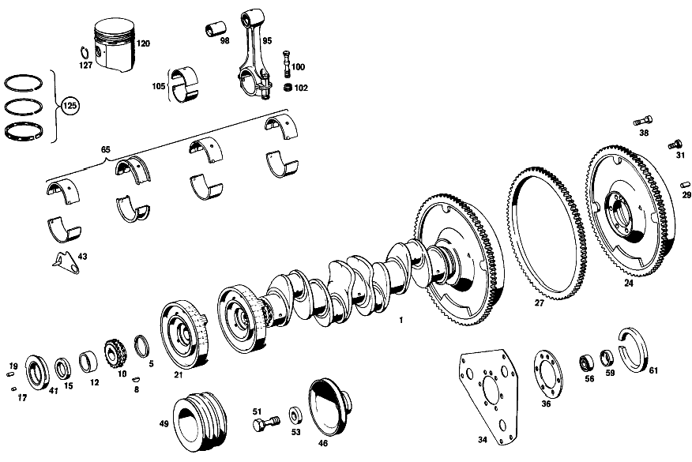

| № | Артикул | Название | Кол. | Примечание | Ограничение |
|---|---|---|---|---|---|
| 1 | A 121 030 93 01 | КОЛЕНВАЛ | 1 | Коробка передач | |
| 5 | A 180 031 00 52 | - РАСПОРНАЯ ШАЙБА | - | 5.45 MM,AS REQUIRED [006] NO LONGER AVAILABLE | |
| 8 | A 121 991 00 67 | Cегментная шпонка | 1 | ||
| 10 | A 615 052 01 03 | - РАСПР. ШЕСТЕРНЯ КОЛЕНВАЛА | 1 | ||
| 12 | A 180 031 04 25 | - Маслоотражательное кольцо | - | ||
| 12 | A 108 031 02 51 | - Проставочное кольцо | 1 | ||
| 15 | A 121 031 04 51 | - ДИСТАНЦИОННОЕ КОЛЬЦО | 1 | ||
| 17 | N 000007 008202 | - Цилиндрический штифт | 1 | ||
| 19 | N 000007 008206 | - Цилиндрический штифт | 1 | ||
| 21 | A 621 031 11 07 | ПРОТИВОВЕС | 1 | ||
| 24 | A 121 030 11 05 | - МАХОВИК | 1 | Коробка передач | |
| 27 | A 180 032 06 05 | - Зубчатый венец | 1 | ||
| 29 | N 000007 010204 | - Цилиндрический штифт | 1 | ||
| 31 | A 621 032 00 71 | - БОЛТ | 6 | Коробка передач | |
| 34 | A 108 032 00 06 | - ПОВОДОК | - | Автоматическая коробка переключения передач | |
| 34 | A 115 032 00 06 | - Ведомый диск | 1 | Автоматическая коробка переключения передач | |
| 36 | A 108 031 03 52 | - РАСПОРНАЯ ШАЙБА | 1 | Автоматическая коробка переключения передач | |
| 38 | A 110 990 04 19 | - болт | 6 | Автоматическая коробка переключения передач | |
| 41 | A 008 997 15 47 | - Уплотнительное кольцо | 1 | ||
| 41 | A 008 997 16 47 | - Уплотнительное кольцо | - | ||
| 41 | A 009 997 45 47 | - Уплотнительное кольцо | 1 | [402] БОЛЬШЕ НЕ ПОСТАВЛЯЕТСЯ | |
| 43 | A 121 032 02 15 | Указатель | 1 | ||
| 46 | A 121 200 01 05 | ШКИВ | 1 | 125 MM | |
| 49 | A 621 234 02 12 | ШКИВ | 1 | [402] БОЛЬШЕ НЕ ПОСТАВЛЯЕТСЯ [033] ON SPECIAL REQUEST, REFRIGERANT COMPRESSOR | |
| 51 | N 000961 018041 | Винт | - | ||
| 51 | N 308676 018001 | Винт с 6-гранной головкой | 1 | ||
| 53 | A 127 993 00 26 | Тарельчатая пружина | 1 | ||
| 56 | A 115 980 00 15 | ПОДШИПНИК РАДИАЛЬНЫЙ | - | Коробка передач | |
| 56 | A 115 980 01 15 | Рад. шарикоподшипник | 1 | Коробка передач | |
| 59 | A 189 031 00 33 | Стопорное кольцо | 1 | Коробка передач | |
| 61 | A 001 997 12 41 | Уплотнительное кольцо | 1 | ||
| 95 | A 617 030 04 20 | Шатун | 4 | ||
| 98 | A 615 038 01 50 | - ВТУЛКА ШАТУНА ВЕРХ. | 4 | ||
| 98 | A 621 038 11 50 | - ВТУЛКА ШАТУНА ВЕРХ. | 4 | ||
| 98 | A 621 038 19 50 | - Втулка шатуна | 4 | ||
| 100 | A 121 038 03 71 | - БОЛТ | 8 | [034] INAPPLICABLE TO CONNECTING ROD 615 030 04 20 | |
| 102 | A 182 038 00 72 | - ГАЙКА | 8 | ||
| 105 | A 115 030 00 60 | К-т шатунного подшипника | 1 | КОМПЛЕКТ ДЕТАЛЕЙ, НОРМАЛЬН. 52.00 MM [035] APPLICABLE TO CONNECTING ROD 615 030 04 20 | |
| 120 | A 115 030 96 17 | ПОРШЕНЬ | 4 | 87.00 MM = STANDARD | |
| 125 | A 000 030 46 24 | - КОЛЬЦО ПОРШНЕВОЕ | 4 | К\-Т ДЕТАЛЕЙ [039] INAPPLICABLE TO PISTON 115 030 96 17 | |
| 127 | A 000 994 55 35 | - Пруж. стопорное кольцо | 8 | ||
| A 121 030 11 02 | КОЛЕНВАЛ | 1 | Коробка передач [001] ON SPECIAL REQUEST, H.D. CLUTCH USED FOR TAXI | ||
| A 121 030 12 02 | КОЛЕНВАЛ | 1 | Автоматическая коробка переключения передач | ||
| A 180 031 01 52 | - Компенсационное кольцо | - | 5.60 MM,AS REQUIRED [006] NO LONGER AVAILABLE | ||
| A 180 031 02 52 | - Компенсационное кольцо | - | 5.75 MM,AS REQUIRED [006] NO LONGER AVAILABLE | ||
| A 180 031 03 52 | - РАСПОРНАЯ ШАЙБА | - | 5.90 MM,AS REQUIRED [006] NO LONGER AVAILABLE | ||
| A 180 031 04 52 | - РАСПОРНАЯ ШАЙБА | - | 6.05 MM,AS REQUIRED [006] NO LONGER AVAILABLE [402] БОЛЬШЕ НЕ ПОСТАВЛЯЕТСЯ | ||
| A 615 052 02 03 | - Шестерня коленчатого вала | 1 | |||
| A 121 031 01 51 | - ДИСТАНЦИОННОЕ КОЛЬЦО | - | |||
| A 121 031 03 51 | - ДИСТАНЦИОННОЕ КОЛЬЦО | - | |||
| A 121 030 18 05 | - МАХОВИК | 1 | Коробка передач [001] ON SPECIAL REQUEST, H.D. CLUTCH USED FOR TAXI | ||
| A 121 030 27 05 | - МАХОВИК | 1 | Автоматическая коробка переключения передач | ||
| N 000007 010214 | - ЦИЛ. ШТИФТ | 1 | Автоматическая коробка переключения передач | ||
| A 120 031 01 81 | - УПЛОТНИТ. КОЛЬЦО | - | |||
| A 004 997 68 46 | - УПЛОТНИТ. КОЛЬЦО | - | |||
| A 121 466 03 15 | ШКИВ | 1 | Рулевое управление: Влево [024] ON SPECIAL REQUEST, POWER STEERING | ||
| A 621 031 00 76 | ШАЙБА | - | |||
| A 121 031 00 76 | ШАЙБА | 1 | [024] ON SPECIAL REQUEST, POWER STEERING | ||
| A 127 993 00 26 | Тарельчатая пружина | 3 | |||
| A 121 030 15 40 | К-т кор. подш.коленвала | 1 | КОМПЛЕКТ ДЕТАЛЕЙ, НОРМАЛЬН. 70;00 MM | ||
| A 121 033 24 01 | - ВКЛАДЫШ ПОДШИПНИКА К/ВАЛА | - | [417] БОЛЬШЕ НЕ ПОСТАВЛЯЕТСЯ, ЗАКАЗЫВАТЬ КОМПЛЕКТ ПОСТАВКИ [026] NO LONGER AVAILABLE INDIVIDUALLY,BUT ONLY BY SETS | ||
| A 621 033 15 07 | - ВКЛАДЫШ ПОДШИПНИКА К/ВАЛА | - | [417] БОЛЬШЕ НЕ ПОСТАВЛЯЕТСЯ, ЗАКАЗЫВАТЬ КОМПЛЕКТ ПОСТАВКИ [026] NO LONGER AVAILABLE INDIVIDUALLY,BUT ONLY BY SETS | ||
| A 621 033 20 07 | - ВКЛАДЫШ ПОДШИПНИКА К/ВАЛА | 2 | с A THICKER COLLAR; REPAIR SIZE | ||
| A 121 033 24 02 | - ВКЛАДЫШ ПОДШИПНИКА К/ВАЛА | - | [417] БОЛЬШЕ НЕ ПОСТАВЛЯЕТСЯ, ЗАКАЗЫВАТЬ КОМПЛЕКТ ПОСТАВКИ [026] NO LONGER AVAILABLE INDIVIDUALLY,BUT ONLY BY SETS | ||
| A 121 030 16 40 | К-т кор. подш.коленвала | 1 | КОМПЛЕКТ ДЕТАЛЕЙ, РЕМ. РАЗМЕР I 69.75 MM | ||
| A 121 033 25 01 | - ВКЛАДЫШ ПОДШИПНИКА К/ВАЛА | - | [417] БОЛЬШЕ НЕ ПОСТАВЛЯЕТСЯ, ЗАКАЗЫВАТЬ КОМПЛЕКТ ПОСТАВКИ [026] NO LONGER AVAILABLE INDIVIDUALLY,BUT ONLY BY SETS | ||
| A 621 033 16 07 | - ВКЛАДЫШ ПОДШИПНИКА К/ВАЛА | - | [417] БОЛЬШЕ НЕ ПОСТАВЛЯЕТСЯ, ЗАКАЗЫВАТЬ КОМПЛЕКТ ПОСТАВКИ [026] NO LONGER AVAILABLE INDIVIDUALLY,BUT ONLY BY SETS | ||
| A 121 033 25 02 | - ВКЛАДЫШ ПОДШИПНИКА К/ВАЛА | - | [417] БОЛЬШЕ НЕ ПОСТАВЛЯЕТСЯ, ЗАКАЗЫВАТЬ КОМПЛЕКТ ПОСТАВКИ [026] NO LONGER AVAILABLE INDIVIDUALLY,BUT ONLY BY SETS | ||
| A 121 030 17 40 | КОРЕННОЙ ПОДШИПНИК К/ВАЛА | 1 | КОМПЛЕКТ ДЕТАЛЕЙ, РЕМ. РАЗМЕР II 69.50 MM | ||
| A 121 033 26 01 | - ВКЛАДЫШ ПОДШИПНИКА К/ВАЛА | - | [417] БОЛЬШЕ НЕ ПОСТАВЛЯЕТСЯ, ЗАКАЗЫВАТЬ КОМПЛЕКТ ПОСТАВКИ [026] NO LONGER AVAILABLE INDIVIDUALLY,BUT ONLY BY SETS | ||
| A 621 033 17 07 | - ВКЛАДЫШ ПОДШИПНИКА К/ВАЛА | - | [417] БОЛЬШЕ НЕ ПОСТАВЛЯЕТСЯ, ЗАКАЗЫВАТЬ КОМПЛЕКТ ПОСТАВКИ [026] NO LONGER AVAILABLE INDIVIDUALLY,BUT ONLY BY SETS | ||
| A 121 033 26 02 | - ВКЛАДЫШ ПОДШИПНИКА К/ВАЛА | - | [417] БОЛЬШЕ НЕ ПОСТАВЛЯЕТСЯ, ЗАКАЗЫВАТЬ КОМПЛЕКТ ПОСТАВКИ [026] NO LONGER AVAILABLE INDIVIDUALLY,BUT ONLY BY SETS | ||
| A 121 030 18 40 | КОРЕННОЙ ПОДШИПНИК К/ВАЛА | 1 | КОМПЛЕКТ ДЕТАЛЕЙ, РЕМ. РАЗМЕР III 69.25 MM | ||
| A 121 033 27 01 | - ВКЛАДЫШ ПОДШИПНИКА К/ВАЛА | - | [417] БОЛЬШЕ НЕ ПОСТАВЛЯЕТСЯ, ЗАКАЗЫВАТЬ КОМПЛЕКТ ПОСТАВКИ [026] NO LONGER AVAILABLE INDIVIDUALLY,BUT ONLY BY SETS | ||
| A 621 033 18 07 | - ВКЛАДЫШ ПОДШИПНИКА К/ВАЛА | - | [417] БОЛЬШЕ НЕ ПОСТАВЛЯЕТСЯ, ЗАКАЗЫВАТЬ КОМПЛЕКТ ПОСТАВКИ [026] NO LONGER AVAILABLE INDIVIDUALLY,BUT ONLY BY SETS | ||
| A 121 033 27 02 | - ВКЛАДЫШ ПОДШИПНИКА К/ВАЛА | - | [417] БОЛЬШЕ НЕ ПОСТАВЛЯЕТСЯ, ЗАКАЗЫВАТЬ КОМПЛЕКТ ПОСТАВКИ [026] NO LONGER AVAILABLE INDIVIDUALLY,BUT ONLY BY SETS | ||
| A 121 030 19 40 | КОРЕННОЙ ПОДШИПНИК К/ВАЛА | 1 | КОМПЛЕКТ ДЕТАЛЕЙ, РЕМ. РАЗМЕР IV 69.00 MM | ||
| A 121 033 28 01 | - ВКЛАДЫШ ПОДШИПНИКА К/ВАЛА | - | [417] БОЛЬШЕ НЕ ПОСТАВЛЯЕТСЯ, ЗАКАЗЫВАТЬ КОМПЛЕКТ ПОСТАВКИ [026] NO LONGER AVAILABLE INDIVIDUALLY,BUT ONLY BY SETS | ||
| A 621 033 19 07 | - ВКЛАДЫШ ПОДШИПНИКА К/ВАЛА | - | [417] БОЛЬШЕ НЕ ПОСТАВЛЯЕТСЯ, ЗАКАЗЫВАТЬ КОМПЛЕКТ ПОСТАВКИ [026] NO LONGER AVAILABLE INDIVIDUALLY,BUT ONLY BY SETS | ||
| A 121 033 28 02 | - ВКЛАДЫШ ПОДШИПНИКА К/ВАЛА | - | [417] БОЛЬШЕ НЕ ПОСТАВЛЯЕТСЯ, ЗАКАЗЫВАТЬ КОМПЛЕКТ ПОСТАВКИ [026] NO LONGER AVAILABLE INDIVIDUALLY,BUT ONLY BY SETS | ||
| A 621 030 21 20 | ШАТУН | - | [405] ЗАМЕНЯТЬ ТОЛЬКО В КОМПЛЕКТЕ | ||
| A 621 038 12 50 | - ВТУЛКА ШАТУНА ВЕРХ. | 4 | 29.50 MM | ||
| A 621 038 20 50 | - Втулка шатуна | 4 | 29.50 MM | ||
| A 615 038 02 71 | - болт | - | |||
| A 615 038 05 71 | - болт | 8 | [035] APPLICABLE TO CONNECTING ROD 615 030 04 20 | ||
| A 121 586 00 03 | РЕМКОМПЛЕКТ | - | |||
| A 121 030 00 60 | К-т шатунного подшипника | 1 | CONNECTING ROD BEARING SHELLS,52.00 MM,STANDARD [034] INAPPLICABLE TO CONNECTING ROD 615 030 04 20 | ||
| A 121 030 01 60 | К-т шатунного подшипника | 1 | КОМПЛЕКТ ДЕТАЛЕЙ, РЕМ. РАЗМЕР I 51.75 MM [034] INAPPLICABLE TO CONNECTING ROD 615 030 04 20 | ||
| A 115 030 01 60 | К-т шатунного подшипника | 1 | КОМПЛЕКТ ДЕТАЛЕЙ, РЕМ. РАЗМЕР I 51.75 MM [035] APPLICABLE TO CONNECTING ROD 615 030 04 20 | ||
| A 121 030 02 60 | К-т шатунного подшипника | 1 | КОМПЛЕКТ ДЕТАЛЕЙ, РЕМ. РАЗМЕР II 51.50 MM [034] INAPPLICABLE TO CONNECTING ROD 615 030 04 20 | ||
| A 115 030 02 60 | К-т шатунного подшипника | 1 | КОМПЛЕКТ ДЕТАЛЕЙ, РЕМ. РАЗМЕР II 51.50 MM [035] APPLICABLE TO CONNECTING ROD 615 030 04 20 | ||
| A 121 030 03 60 | К-т шатунного подшипника | 1 | КОМПЛЕКТ ДЕТАЛЕЙ, РЕМ. РАЗМЕР III 51.25 MM [034] INAPPLICABLE TO CONNECTING ROD 615 030 04 20 | ||
| A 115 030 03 60 | К-т шатунного подшипника | 1 | КОМПЛЕКТ ДЕТАЛЕЙ, РЕМ. РАЗМЕР III 51.25 MM [035] APPLICABLE TO CONNECTING ROD 615 030 04 20 | ||
| A 121 030 04 60 | К-т шатунного подшипника | 1 | КОМПЛЕКТ ДЕТАЛЕЙ, РЕМ. РАЗМЕР IV 51.00 MM [034] INAPPLICABLE TO CONNECTING ROD 615 030 04 20 | ||
| A 115 030 04 60 | К-т шатунного подшипника | 1 | КОМПЛЕКТ ДЕТАЛЕЙ, РЕМ. РАЗМЕР IV 51.00 MM [035] APPLICABLE TO CONNECTING ROD 615 030 04 20 | ||
| A 000 030 97 24 | - КОЛЬЦО ПОРШНЕВОЕ | 4 | К\-Т ДЕТАЛЕЙ [417] БОЛЬШЕ НЕ ПОСТАВЛЯЕТСЯ, ЗАКАЗЫВАТЬ КОМПЛЕКТ ПОСТАВКИ [040] APPLICABLE TO PISTON 115 030 96 17 | ||
| A 115 030 71 17 | ПОРШЕНЬ | 4 | INTERMEDIATE SIZE;87.25MM [006] NO LONGER AVAILABLE [402] БОЛЬШЕ НЕ ПОСТАВЛЯЕТСЯ | ||
| A 000 030 47 24 | - КОЛЬЦО ПОРШНЕВОЕ | 4 | К\-Т ДЕТАЛЕЙ | ||
| A 000 994 55 35 | - Пруж. стопорное кольцо | 8 | |||
| A 115 030 98 17 | ПОРШЕНЬ | 4 | РЕМОНТНАЯ ГРУППА I 87 MM | ||
| A 000 030 48 24 | - КОЛЬЦО ПОРШНЕВОЕ | 4 | К\-Т ДЕТАЛЕЙ [041] INAPPLICABLE TO PISTON 115 030 98 17 | ||
| A 000 030 98 24 | - КОЛЬЦО ПОРШНЕВОЕ | 4 | К\-Т ДЕТАЛЕЙ [402] БОЛЬШЕ НЕ ПОСТАВЛЯЕТСЯ [042] APPLICABLE TO PISTON 115 030 98 17 | ||
| A 000 994 55 35 | - Пруж. стопорное кольцо | 8 | |||
| A 115 030 99 17 | ПОРШЕНЬ | 4 | REPAIR SIZE II 88.00 MM | ||
| A 000 030 49 24 | - КОЛЬЦО ПОРШНЕВОЕ | 4 | К\-Т ДЕТАЛЕЙ [043] INAPPLICABLE TO PISTON 115 030 99 17 | ||
| A 003 586 86 03 | - РЕМКОМПЛЕКТ | - | |||
| A 000 030 99 24 | - КОЛЬЦО ПОРШНЕВОЕ | 4 | КОЛЬЦА ПОРШНЕВЫЕ [402] БОЛЬШЕ НЕ ПОСТАВЛЯЕТСЯ [044] APPLICABLE TO PISTON 115 030 99 17 | ||
| A 000 994 55 35 | - Пруж. стопорное кольцо | 8 | |||
| A 115 030 00 18 | ПОРШЕНЬ | 4 | РЕМОНТ. ГРУППА III 80.5 MM | ||
| A 001 030 53 24 | - КОЛЬЦО ПОРШНЕВОЕ | 4 | К\-Т ДЕТАЛЕЙ 88.50 MM [045] INAPPLICABLE TO PISTON 115 030 00 18 | ||
| A 001 030 00 24 | - КОЛЬЦО ПОРШНЕВОЕ | 4 | К\-Т ДЕТАЛЕЙ [046] APPLICABLE TO PISTON 115 030 00 18 | ||
| A 000 994 55 35 | - Пруж. стопорное кольцо | 8 |
Позиций: 112 · подписано на схемах: 41 · колесо — плавный зум в курсор, перетаскивание — пан, двойной клик — зум, клик по артикулу — скопировать.